Справочник по Git и GitHub · модуль 2 · первый репозиторий в VS Code
Глава 2.2
Свой проект и чужой:
init и clone
В главе разобраны два способа получить репозиторий. Путь А: историю заводят в своей папке. Путь Б: проект с GitHub скачивают вместе со всеми версиями. У каждого шага есть кадр экрана.
- Категория
- Начало работы
- Уровень
- Начальный
- Что получится
- Свой репозиторий и клон чужого проекта на диске
- Сколько занимает
- Около пятнадцати минут за компьютером
§1Две ситуации: свой проект и чужой
Работа начинается с пустой папки или с готового проекта. В пустой папке историю заводят, готовый проект скачивают вместе с его историей.
Путь А · проект начинаете вы
Кнопка Initialize Repository заводит историю в вашей папке.
- История пустая: коммитов ноль
- Интернет не нужен
- На GitHub ничего пока нет
Путь Б · проект уже существует
Команда Git: Clone скачивает проект целиком: файлы, коммиты, ветки и адрес сервера.
- История приходит вместе с файлами
- Нужен интернет и адрес репозитория
- Связь с сервером настроена сразу
Зачем это нужно в работе
- Работа в готовом проекте. На новом месте работы первым делом клонируют репозиторий команды. В клоне сразу записан адрес, куда отправлять правки.
- Своя разработка с первого дня. Репозиторий заводят в начале работы над проектом. Правки, сделанные до этого, в историю не попадут.
- Изучение чужого кода. Вместе с файлами клонируются все прошлые коммиты. По ним видно, как проект менялся.
- Копия на другом компьютере. Тот же проект дома и на работе — это два клона одного репозитория. Переносить папку флешкой не нужно.
§2Путь А, шаг 1. Завести репозиторий в своей папке
Путь А: своя папка без истории.
Создаём пустую папку проекта и открываем её в VS Code через File → Open Folder. Затем открываем панель Source Control: CtrlCmd + Shift + G.
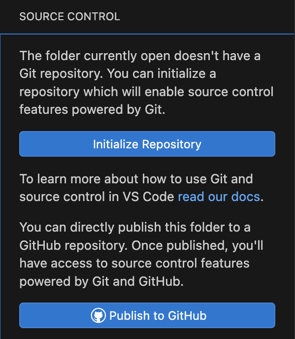
Нажимаем Initialize Repository. Подтверждение не требуется, панель меняется сразу:
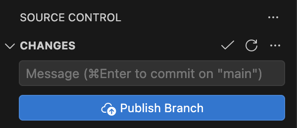
main. История заведена и пока пуста.То же в терминале:
git init
Создание файла, отбор и первый коммит разобраны в главе 2.1. Здесь рассматривается только появление репозитория.
Вторая кнопка, Publish to GitHub, дополнительно создаёт репозиторий на GitHub. Её используют, когда проект с начала общий. В проектах этого курса историю сначала заводят у себя, публикация разобрана в модуле 4.
Имя первой ветки задаёт Git. До 2020 года по умолчанию использовалось master, затем GitHub и Git перешли на main, поэтому в старых проектах встречается прежнее имя. Имя задаётся настройкой из главы 1.3: git config --global init.defaultBranch main.
Что получилось.В папке заведён пустой репозиторий, внизу окна имя main.
§3Путь А, шаг 2. Проверить, что появилось на диске
Шаг показывает, что появилось в папке после Initialize Repository.
В проводнике папка выглядит как прежде. В ней появилась скрытая папка .git, её показывает команда вывода скрытых файлов. Команды набираются во встроенном терминале VS Code: меню Terminal → New Terminal или Ctrl + `. Терминал открывается внизу окна сразу в папке проекта.
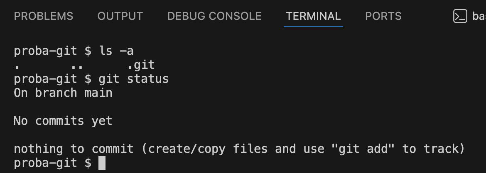
В Windows терминал по умолчанию — PowerShell, и в нём эта команда пишется ls -Force. Ответ выглядит как таблица, но папка .git в ней та же.Команда ls -a выводит все файлы папки, включая скрытые:
ls -a
.
..
.git
Точка и две точки — сама папка и родительская, они есть в любой папке. Третья строка — новая папка .git. Её содержимое:
Содержимое .git сразу после Initialize Repository
Содержимое разбирается в модуле 3. История проекта хранится в этой папке на вашем компьютере и копируется вместе с папкой проекта.
Состояние нового репозитория по команде git status:
git status
On branch main
No commits yet
nothing to commit (create/copy files and use "git add" to track)
Git сообщает три вещи: ветка называется main, коммитов нет, файлов для отслеживания нет. То же показывает пустая панель Source Control. Путь А закончен.
Что получилось.В папке есть скрытая .git. Git подтверждает: коммитов нет, отслеживать нечего.
§4Путь Б, шаг 1. Скопировать адрес проекта
Путь Б: проект уже есть на GitHub, его получают вместе с историей. Для этого нужен адрес репозитория.
Клонировать будем проект sait-vizitka — сайт-визитку из трёх файлов с короткой историей. Проект открытый, клонировать его может любой пользователь.
Адрес репозитория находится под зелёной кнопкой Code. В адресной строке браузера — ссылка на страницу проекта.
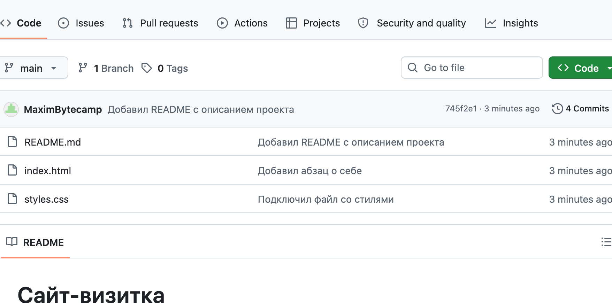
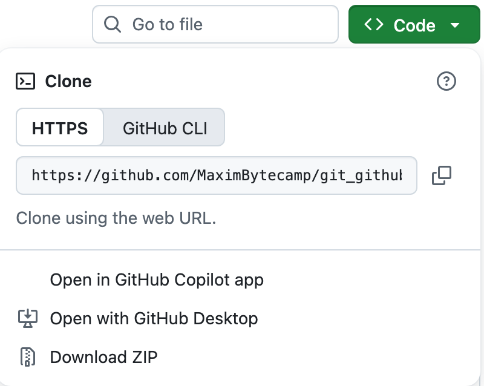
Скопировался адрес, заканчивающийся на .git:
Адреса отличаются окончанием .git. Git принимает оба варианта, но адрес копируют из поля под кнопкой Code.
Что получилось.В буфере обмена адрес https://github.com/MaximBytecamp/sait-vizitka.git.
§5Путь Б, шаг 2. Вызвать команду Git: Clone
Клонирование запускается командой VS Code.
Открываем палитру команд: CtrlCmd + Shift + P. Набираем Git: Clone, в списке остаются два пункта.
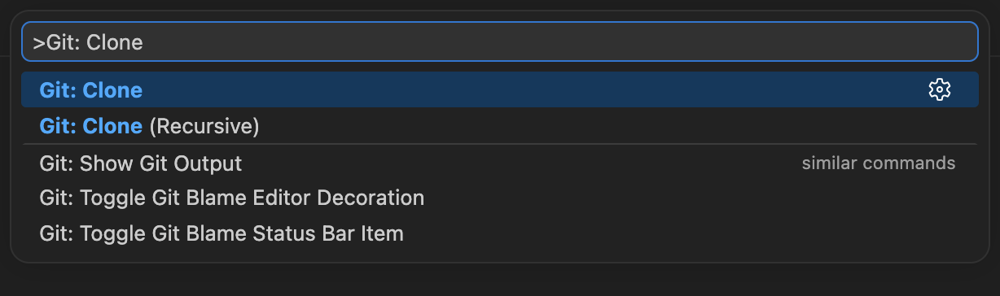
Если в окне не открыта ни одна папка, ту же команду запускает кнопка Clone Repository в проводнике.
Что получилось.В палитре команд выбран пункт Git: Clone.
§6Путь Б, шаг 3. Вставить адрес
Выбираем пункт Git: Clone. Поле ввода меняется на «Provide repository URL». Вставляем скопированный адрес и нажимаем Enter.
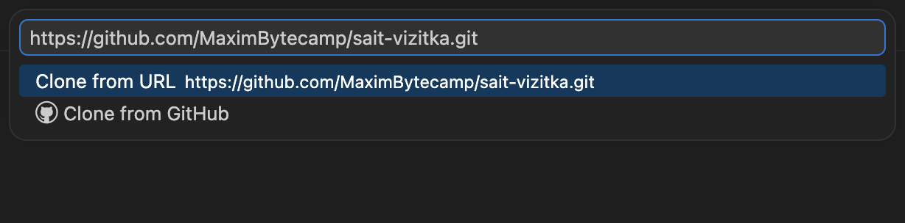
Что получилось.Адрес принят, VS Code просит выбрать папку.
§7Путь Б, шаг 4. Выбрать папку и открыть проект
Открывается окно выбора папки. Выбираем папку, внутри которой появится проект. Папка проекта с именем репозитория создаётся автоматически.
Когда загрузка закончится, VS Code спросит, что сделать со скачанным проектом:
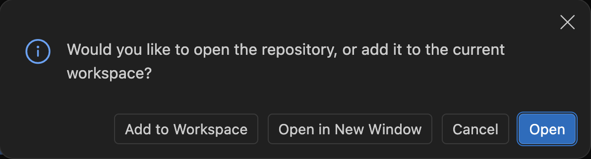
Нажимаем Open. В проводнике появляются файлы проекта:
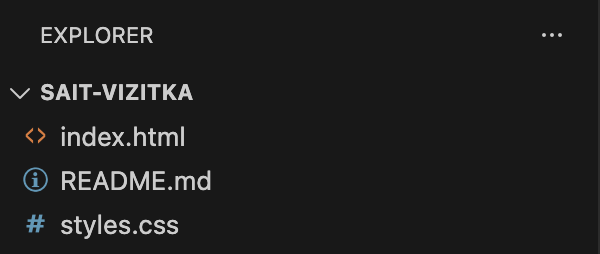
index.html, README.md, styles.css. Это те же файлы, что на странице проекта на GitHub.То же в терминале. Команду запускают в папке, внутри которой должен появиться проект:
git clone https://github.com/MaximBytecamp/sait-vizitka.git
В строке состояния видны имя ветки и значок обмена с сервером:
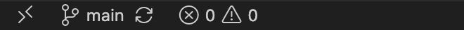
Панель Source Control пустая: папка совпадает с последним коммитом.
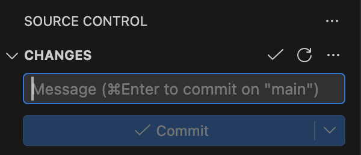
Что получилось.Проект открыт в VS Code: три файла, в строке состояния main, список изменений пуст.
§8Путь Б, шаг 5. Убедиться, что пришла история
Вместе с файлами скачиваются все прошлые версии. Это проверяют двумя командами в терминале проекта.
git log --oneline
745f2e1 Добавил README с описанием проекта
8da3e92 Добавил абзац о себе
8e377ad Подключил файл со стилями
934282c Первая страница сайта
Каждая строка — коммит, самый ранний внизу. Слева короткое имя коммита, справа пояснение автора. Коммиты хранятся на диске и открываются без интернета. По ним видно, что сайт начался с одной страницы, затем подключили стили, добавили абзац и описание.
git remote -v
origin https://github.com/MaximBytecamp/sait-vizitka.git (fetch)
origin https://github.com/MaximBytecamp/sait-vizitka.git (push)
Адрес сервера записан под коротким именем origin. Поэтому в строке состояния появились стрелки обмена. Строки две, потому что адрес получения и адрес отправки можно задать разными; обычно они совпадают.
main создана, но пустаяorigin прописан, ветка main стоит на последнем коммитеАссоциация: два способа получить тетрадь
Чистую тетрадь начинают с первой страницы. Каждую новую запись датируют и подписывают.
Точная копия чужой тетради содержит все прошлые записи с датами и подписями авторов. В ней можно читать прошлые записи и добавлять новые в конец.
Где не совпадаетКопия тетради не связана с оригиналом. В клоне записан адрес репозитория, из которого он скачан: с него получают новые коммиты и на него отправляют свои. Обмен запускают кнопкой, он разобран в модуле 4.
Скачиваются текущая версия файлов и все прошлые состояния. У проекта sait-vizitka из трёх файлов папка .git занимает около 120 КБ, больше самих файлов. У проектов с долгой историей она может быть в несколько раз больше рабочих файлов.
Что получилось.Вместе с файлами пришли все четыре коммита и адрес сервера origin.
§9Clone или Download ZIP
В меню кнопки Code есть пункт Download ZIP. Он скачивает только файлы последней версии.
Download ZIP
Архив с файлами последней версии.
- Истории нет: в архиве нет папки
.git - Вернуться к прошлой версии нельзя
- Отправить правки автору нельзя
- Для обновления архив скачивают заново
Clone
Полноценный репозиторий на вашем диске.
- Все версии и ветки доступны на диске
- Обновление — одной кнопкой, без повторного скачивания
- Свои правки можно предложить автору
- Панель Source Control работает
Архив скачивают, когда нужен разовый образец: шаблон, пример вёрстки, набор картинок. Для работы с проектом его клонируют. Архив не обновляется и не хранит адрес, откуда он скачан.
§10Где можно ошибиться
Ниже частые ошибки при создании и клонировании репозитория. О каждой Git сообщает в ответе команды.
Репозиторий внутри репозитория
Если в подпапке уже существующего репозитория нажать Initialize Repository, получатся два вложенных репозитория. Внешний перестаёт отслеживать файлы подпапки, внутренний ведёт отдельную историю.
git init
Initialized empty Git repository in /Users/vy/proba-git/vnutri/.git/
Git это разрешает, вложенные репозитории иногда создают намеренно. В работах этого курса это ошибка, её исправляют удалением лишней папки .git из подпапки. Признак в панели: файлы подпапки не появляются в списке изменений.
init поверх готового репозитория
Повторный запуск в той же папке историю не стирает:
git init
Reinitialized existing Git repository in /Users/vy/proba-git/.git/
Ответ отличается словом Reinitialized вместо Initialized. Коммиты сохраняются.
Клонирование в непустую папку
Если папка с таким именем уже существует и не пуста, клонирование не выполняется:
git clone https://github.com/MaximBytecamp/sait-vizitka.git
fatal: destination path 'sait-vizitka' already exists and is not an empty directory.
Git не перезаписывает существующие файлы. Нужно выбрать другое место или указать другое имя папки последним аргументом команды.
Репозиторий в облачной папке
Репозиторий в синхронизируемой папке — iCloud Drive, Google Drive, OneDrive — может повредиться. Облачный клиент копирует служебные файлы .git независимо от Git, а при работе с двух компьютеров файлы истории меняются одновременно. Между компьютерами проект синхронизируют через GitHub.
Проверка после создания или клонирования
main. Если имени нет — репозитория в этой папке нет.Documents или имя пользователя, открыта папка уровнем выше.git log --oneline показывает чужие коммиты, а в строке состояния стоят стрелки обмена.§11Словарь главы
Термины главы, которые используются в следующих главах.
| Слово | Что это | Где встречается |
|---|---|---|
| init | Завести историю в своей папке: создаётся .git | Кнопка Initialize Repository, команда git init |
| clone | Забрать чужой репозиторий вместе с историей | Команда Git: Clone в палитре, git clone адрес |
| remote | Копия проекта на сервере, с которой идёт обмен | Появляется у клона; своему репозиторию не обязательна |
| origin | Короткое имя основного адреса, чтобы не писать ссылку целиком | git remote -v, кнопки Push и Pull |
§12Частые вопросы
.git на вашем компьютере. На GitHub проект появляется после Publish to GitHub или настройки отправки..git. В клоне дополнительно записан адрес сервера origin, через который идёт обмен коммитами..git, проект сломается.§13Проверьте себя
Вам прислали ссылку на проект. Как начать с ним работать?
Открыть страницу проекта, нажать Code и скопировать адрес из поля HTTPS. В VS Code открыть палитру команд, выбрать Git: Clone, вставить адрес, выбрать папку и открыть проект. В папке будут файлы, вся история и адрес origin.
Чем состояние папки после Initialize Repository отличается от состояния после клонирования?
После init история пустая: ветка main создана, коммитов ноль, удалённой копии нет, внизу окна значок облака. После клонирования на диске лежат все коммиты проекта, ветка стоит на последнем из них, адрес записан под именем origin, а внизу окна стрелки обмена.
Почему проект, который будете дорабатывать, не скачивают через Download ZIP?
В архиве нет папки .git, а значит, нет истории: прошлых версий, авторов строк, возможности отмены. Обновление — только повторное скачивание архива. Отправить правки автору из архива нельзя.
В ответ на команду Git написал Reinitialized existing Git repository. Что произошло и опасно ли это?
Репозиторий в этой папке уже существовал, команда запущена повторно. Коммиты, ветки и настройки сохранились. Слово Reinitialized означает, что папка .git не создавалась заново.
Проект лежит в папке Google Drive, и Git сообщает об ошибках в репозитории. В чём причина?
Облачный клиент копирует служебные файлы .git независимо от Git, а при работе с двух компьютеров — одновременно с обеих сторон. От этого репозиторий повреждается. Проект синхронизируют через GitHub: на каждом компьютере свой клон, изменения передаются коммитами.
Что такое origin?
Короткое имя адреса удалённой копии проекта. Оно заменяет длинную ссылку в командах. При клонировании Git создаёт его автоматически, адрес показывает команда git remote -v.
§14Шпаргалка по главе
File → Open Folder
Initialize Repository
git init
кнопка Code → HTTPS → копировать
палитра: Git: Clone
git clone адрес
.git — история проекта
ветка main
origin — только у клона
git status — состояние
git log --oneline — история
git remote -v — адрес сервера
init в домашней папке
init внутри чужого репозитория
репозиторий в облачной папке
ZIP — файлы без истории
клон — файлы и вся история
Итог главы
Путь А: открыть папку, нажать Initialize Repository — появляется .git и ветка main, история пустая, сервер не задействован. Путь Б: скопировать адрес под кнопкой Code, вызвать Git: Clone, вставить адрес, выбрать папку — на диске оказывается проект со всеми коммитами и записанным адресом origin. Архив ZIP содержит только файлы без истории, поэтому для работы с проектом его не используют. Репозиторий заводят в папке конкретного проекта: вне домашней папки, вне другого репозитория и вне облачной папки. В следующей главе разобрано, что происходит между правкой файла и коммитом и зачем нужен отбор изменений.
- Кадры VS Code сняты на проектах этой главы: пустая папка
proba-gitи клон проектаsait-vizitka. Ответы команд получены в Git версии 2.51.1. - Репозиторий для клонирования — github.com/MaximBytecamp/sait-vizitka: страница одного сайта и четыре коммита.
- Поведение
git initиgit clone— документация git-init и git-clone. - Команда
Git: Cloneи стартовый экран — документация VS Code, раздел Source Control. - Переход на имя ветки
main— объявление GitHub о переименовании ветки по умолчанию.